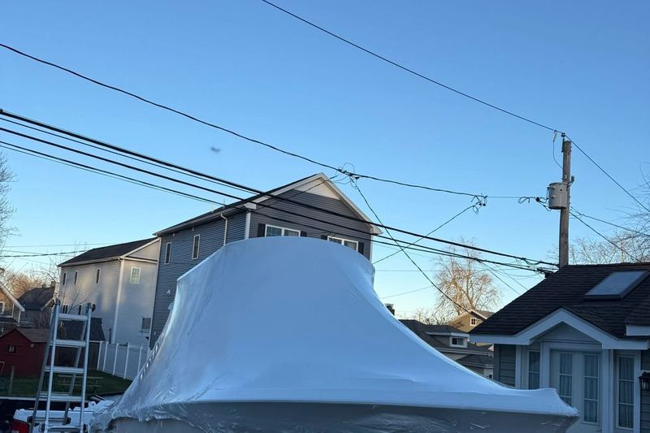

Home / Service Areas / Waterford
Boat detailing in Waterford, CT
The east side of the Niantic River, with Mago Point at the inlet and open Sound frontage beyond.
Niantic River east bank, Jordan Cove, Long Island Sound
Waterford sits about an hour and five minutes from us, holding the east bank of the Niantic River opposite East Lyme plus a stretch of open Sound frontage running east toward New London.
Mago Point at the mouth of the river is the town's boating center, right by the inlet where the current runs hard. The state launch near the inlet is a busy one, and Jordan Cove and Keeny Cove behind it give the town a good deal of sheltered water.
Marinas, docks, and yards in Waterford.
Where we work in Waterford:
Waterford and the spots we work.
Waterford
The east side of the Niantic River, with Mago Point at the inlet and open Sound frontage beyond.
Current, trailers, and open exposure

Waterford has a higher proportion of trailered boats than most towns this far east, largely because the state launch is right there and convenient. Trailer boats collect a different kind of grime from slipped boats: road film along the hull sides and marks from the trailer bunks underneath. The upside is access, since we can reach every surface in a driveway in a way we simply cannot alongside a dock.
The boats that do stay in the water here sit either in the fast-running river inlet or out on open Sound frontage. Both are hard on a finish, the first because of constant tidal flush and the debris it carries, the second because of relentless salt spray. Neither is a case where an annual wash keeps a boat looking right.
Every service, priced by the foot.
The same packages we run across the shoreline. Restoration and seasonal work is quoted after a look at the boat.
We also detail in these towns.
Boat in Waterford? Let's get it shining.
Call or send a message for a free, no-pressure quote on any service.